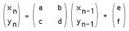

Introduction
Computer graphics using CAD software is typically good at
creating representations of man-made objects using primitives
such as lines, rectangles, polygons, and curves in 2 D or
boxes and surfaces in 3D. These geometric primitives and
usual tools for manipulating them typically prove inadequate
when it comes to representing most objects found in nature
such as clouds, trees, veins, waves, and a clump of mud.
There has been considerable interest recently in chaos theory
and fractal geometry as we find that many processes in the
world can be accurately described using that theory. The
computer graphics industry is rapidly incorporating these
techniques to generate stunningly beautiful images as well as
realistic natural looking structures.
In what follows a description of a few of the more commonly
used techniques will be given along with an example of each.
It should be appreciated that usually the example is one from
an image with a large if not infinite variation depending on
the parameters, scale, and viewing position.
Chaotic Systems
The classic Mandelbrot,
figure 1, has been the image that has
greatly popularised chaotic and fractal systems. The
Mandelbrot set is created by a general technique where a
function of the form
zn+1 = f(zn)
is used to create a series of a complex variable. In the case of
the Mandelbrot, the function is
f(zn) = zn2 + zo
This series is generated for every initial point zo
on some partition of the complex
plane. To draw an image on a computer screen the point under
consideration is coloured depending on the behaviour of the
series which will act in one of the following ways:
(a) decay to 0
(b) tend to infinity
(c) oscillate among a number of states
(d) exhibit no discernible pattern
In figure 1,
situation (a) occurs in the interior portion,
(b) in the exterior, (c) and (d) near the boundary. The
boundary of the set exhibits infinite detail and variation
(the boundary will never appear smooth irrespective of the
zoom factors). as well as self-similarity.
An example using the same technique but a different function
is called biomorphs by CA Pickover. It uses the function
f(zn) = sin(zn2) + c
and gives rise to many biological looking
creatures depending on the value of the constant c, see
figure 2.
Another example resulting in galactic swirls is
obtained using the function
f(zn) = u zn(1 - zn).
Figure 3
shows part of the function with
u = -0.7 + 0.8i
Strange Attractors
A second technique called hopalong is normally used
to represent the strange attractor of a chaotic system, for
example, the well known Julia set. In this case each
coordinate generated by the series is drawn as a small point,
ie: we hop-along from one point to the next.
For an image on a
plane the series is either an equation of a complex variable
or else there are two interrelated equations, one of the x and
one for y coordinate. As an example consider the following
function:
xn+1 =
yn - sign(xn)|b xn - c|0.5
yn+1 = a - xn
This series of the x,y coordinates is specified by an initial
point x0,y0
and three constants a, b, and c. As an example
see figure 4
where a=0.4, b=1, and c=0. Interestingly, for
strange attractors the initial point does not matter (except
for a few special cases), ie: all initial coordinates
x0,y0
result in the same image. In other words, the image shows the
x,y pairs that can be generated by the series, any initial
point will generate the same set of points although they will
generated in a different order.
Another example attributed to Peter de Jong uses the two
equations:
xn+1 = sin(a yn) - cos(b xn)
yn+1 = sin(c xn) - cos(d yn)
This gives swirling tendrils that appear three dimensional,
an example is shown in
figure 5 where a = -2.23, b = -0.65, c
= 0.43, d = -2.43.
Newton Raphson
This technique is based on the Newton Raphson method of
finding the solution (roots) to a polynomial equation of the
form
f(z) = ao + a1 z + a2z2
+ ... + am zm = 0
The method generates a series where the n+1'th
approximation to the solution is given by
zn+1 = zn - f(zn) / f'(zn)
where f'(zn) is the slope (first derivative) of f(z)
evaluated at zn.
To create a 2D image using this technique
each point in a partition of the plane is used as initial
guess, z0,
to the solution. The point is coloured depending
on which solution is found and/or how long it took to arrive
at the solution. A simple example is an application of the
above to find the three roots of the polynomial
z3 - 1 = 0.
Figure 6
shows the appearance of a small portion of the
positive real and imaginary quadrant of the complex plane. A
trademark of chaotic systems is that very similar initial
conditions can give rise to very different behaviour. In the
image shown there are points very close together, one of
which converges to the solution very fast and the other
converges very slowly.
Diffusion Limited Aggregation
Many attractive images can be generated using theory from
areas of chemistry and physics. One such example is diffusion
limited aggregation or DLA which describes, among other
things, the diffusion and aggregation of zinc ions in an
electrolytic solution onto electrodes. Another more colourful
description involves a city square surrounded by taverns.
Drunks leave the taverns and stagger randomly around the
square until they finally trip over one their insensate
companions at which time lulled by the sounds of peaceful
snoring they lie down and fall asleep. The tendril like
structure is an aerial view of the sleeping crowd in the
morning, see figure 7.
L-Systems
Very recently there has been renewed interest in Lindemayer
or simply L-Systems. This is a set of string rewriting rules
which takes an initial string of characters called the axiom
and on every iteration replaces each of the characters in the
string by other strings called production rules. For example
consider the axiom string: F+F+F+F and the single production
rule F-->F+F-F-FF+F+F-F
Now if some characters are giving geometric meaning then the
string can be drawn.
Using these geometric meanings for the symbols an example of
an axiom, production rule, and the resulting string after a
few iterations, the result is the well known Koch curve which
has a fractal dimension between 1 and 2. Production rules can
specify the full range of classical fractal curves (for
example the van Koch snowflake, space filling curves such as
the Hilbert and Peano curves, the dragon curve, as well as
kolam patterns).
Recent usage of L-Systems is for the creation of realistic
looking objects that occur in nature and in particular the
branching structure of plants. Three examples of plant
structures generated from L-Systems are illustrated in
figure 8.
One of the important characteristics of L-Systems is that
only a small amount of information is required to represent
very complex objects. So while the bushed in
figure 8 contains
many thousands of lines, they can be described in a database
by only a few bytes of data, the actual bushes are only
grown when required for visual presentation. Using suitably
designed L-System algorithms it is possible to design the
L-System production rule that will create a particular class of plant.
Iterated Function Systems
Instead of working with lines as in L systems, IFS replaces
polygons by other polygons as described by a generator. On
every iteration each polygon is replaced by a suitably
scaled, rotated, and translated version of the polygons in
the generator.
From this geometric description it is also possible to derive
a hopalong description which gives the image that would be
created after iterating the geometric model to infinity. The
description of this is a set of contractive transformations
on a plane to the form below each with an assigned probability.

To run the system an
initial point is chosen and on each iteration one of the
transformation is chosen randomly accordingly to the assigned
probabilities, the resulting points
(xn,yn) are drawn on the page.
As in the case of L systems, if the IFS code for a desired
image can be determined (by something called Collage theorem)
then large data compression ratios can be achieved. Instead
of storing the geometry of the very complex object, just the
IFS generator needs to be stored and the image can be
generated when required.
Summary
The real application of much of the above has arisen from
attempts to model natural phenomena in the world we live in.
Many of the mathematical techniques have found a firm place
in the computer graphics industry as a means of creating both
stunning graphical images as well as very natural looking
structures. As the techniques become more standardised and
more application areas are found they are likely to be
incorporated as one of the standard tools in CAD, painting
and image processing software packages.
For further reading on this topic a highly recommended book
is the Science of Fractal Images by H.O. Peitgen and D.
Saupe, published by Springer-Verlag, 1988. All of these
systems as well as many others are available form the author
for the Macintosh family of computers.
| {kind=link}